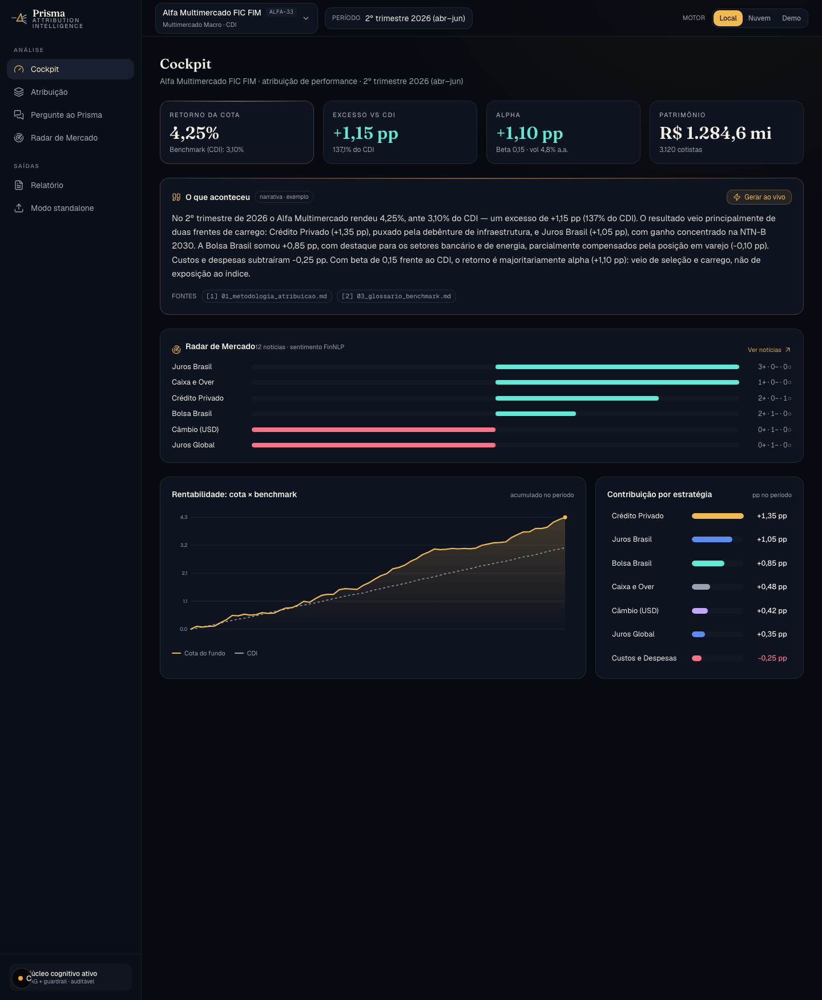
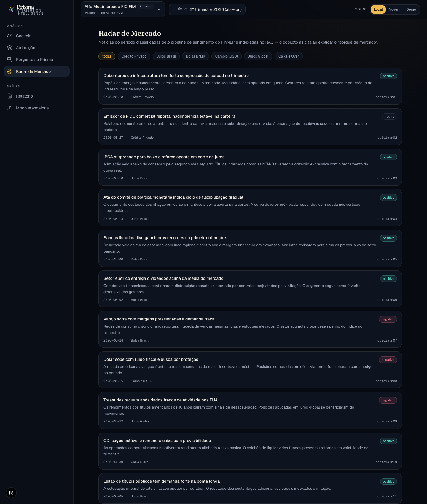
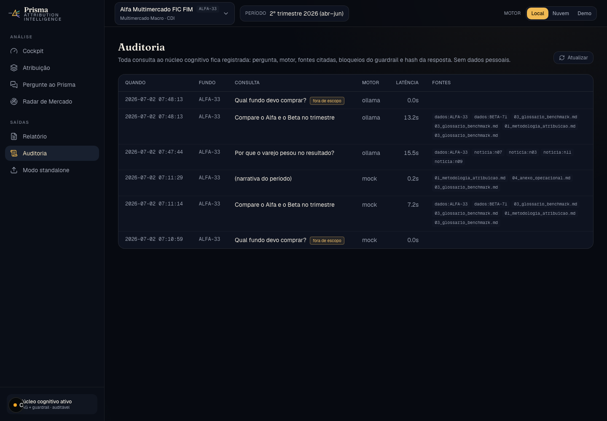

Como transformei os números de um fundo em narrativa auditável — com IA que cita fontes, recusa recomendações e roda 100% local.
A atribuição de performance entrega a contribuição de cada estratégia e ativo.
Mas o comentário que vai para gestor, comitê e cliente ainda é escrito à mão, a cada fechamento. Horas de analista, sem padrão, sem trilha.
Explicar números que já foram calculados é diferente de inventar.
O Prisma recebe o resultado pronto da atribuição e escreve o "de onde veio o retorno" — com cada afirmação apontando a fonte que a sustenta.
Pluga no que a gestora já tem, ou roda sozinho lendo exports.

Um pipeline de sentimento classifica o noticiário por estratégia e alimenta o RAG. Quando você pergunta "por que o varejo pesou?", a resposta cita a notícia.

Pergunta, motor, fontes citadas, bloqueios e hash da resposta — sem dados pessoais.

Geração e embeddings via Ollama, num notebook comum. Nenhum dado sai da máquina.
Local (privado) ↔ Nuvem (rápido) ↔ Demo (determinístico) — trocando num clique, na interface.
Demo reproduzível, dados 100% fictícios, 13 testes, roteiro de 5 minutos no README.
Nascido de dois projetos anteriores: FinNLP (sentimento, grafo) e FinRAG (RAG com guardrails).
Quanto tempo do seu fechamento vai embora escrevendo comentário de carteira?